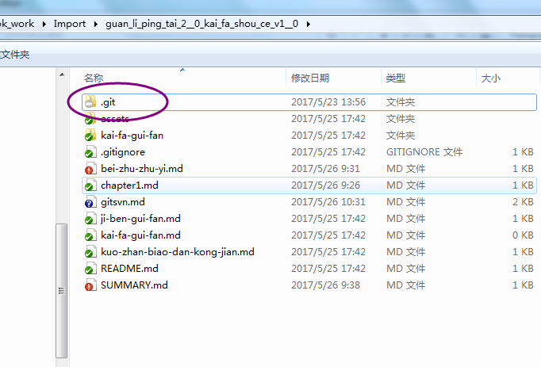
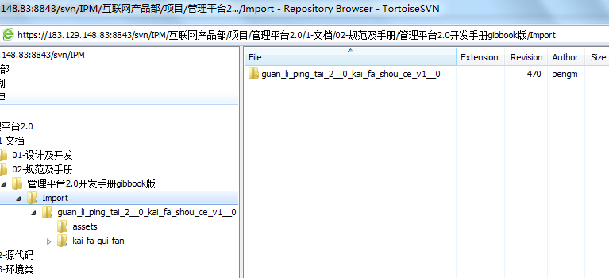

gitbook使用注意事项，编写手册时必看，是我多次尝试后总结的经验
最后证实还是行不通，还是有冲突，因此从svn上迁移到github上！！！！！！
编辑时使用gitbook的7.0版本进行编辑(即安装GitBook.Editor.Setup)，比较方便，但缺点是不能发布编译成html。使用此编辑器，会自创建一个名为“Import”的工作区。也可以选择历史版本，
历史版本下载地址
需要发布成html时，使用独立版本的gitbook（即gitbook-win.zip），会在当前目录生成一个“_book”的目录即为生成后的电子书。
安装gitbook有时会报错，一般是由于缓存目录文件被占用，重启或注销再来安装即可。
使用svn技巧，可以右键中选择忽略列表，忽略.git，这个文件夹非常大，且没必要提交，同理“_book”目录也可忽略。

- 安装gitbook有时会报错，一般是由于缓存目录文件被占用，重启或注销再来安装即可。
！！！！特别注意：
由于gitbook与svn有冲突，用gitbook编辑过电子书后，会修改.svn目录中的版本管理信息，导致版本提时交时故障，尝试多个版本后，还是未解决此问题，6.0左右的版本很奇怪，编辑了文件后，文件并不刷新，可能是缓存在.git目录里，所以更不适用。
由于.git和.svn在同一层目录导到对该目录以下的被版本处理的文件提交时冲突，那么就把svn的管理上提一层，提到Import目录，可变向解决这个问题。

- 且再编辑时，又会在下层自动创建了.svn，所以每次提交时，需要手动把子目录的.svn删除掉，再提交，否则就无法正常提交。